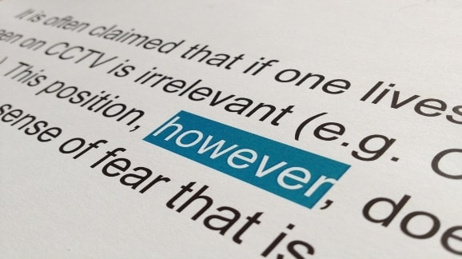

So you want to score a band 8 on IELTS Writing?
Many IELTS test-takers spend a lot of time training to write top-notch essays. To achieve a desired score, they stuff their essays with uncommon vocabulary, overuse complicated grammar or write too many words. But are these means really necessary? The answer is NO.
There are a lot of much simpler writings that score 8.0 and higher! This is because you don’t need any special knowledge: the examiner will assess your writing, not your thoughts. Even simple but accurately expressed ideas score better than too complicated ones. To succeed in IELTS Writing, you need to
- be accurate
- write simple things well
Ridiculously, even well trained candidates often lose points on IELTS Writing because of making simple mistakes: from going off topic to writing too many words.
On this page we’ve gathered top 10 IELTS Writing tips that will help you score band 8+ on IELTS Writing:
-
Read the question
Understanding what the question asks you to do is crucial for achieving a good score. That's why, always read your question thoroughly and cover all the points you're asked to write about. For example:
The government should pay to the parents of very young children, so that one of them can stay at home and look after their children.
What do you think are the pros and cons of this policy? Justify your answer and include any relevant examples from your own knowledge or experience.
In this question you're asked to do two things:- Write pros & cons
- Give examples
Read what you have written
Go back and read the paragraph you have just written before you start the next one. You may think that this is a waste of time. If so, you’d be wrong. It’s important to link your paragraphs together – what easier way to do that than just read what you have written?
Be clear
The practical advice here is to select your best idea and write about that. That means not writing everything you know – leave some ideas out. Don’t worry if it is not your best explanation, worry about whether it is your clearest explanation.
Write about what you know
You are being tested on the quality of your English, not on the quality of your ideas. So you shouldn’t worry about finding the “right answer”. You need a simple idea that you can clearly describe and justify.
Follow the standard structure
To get maximum points, you should follow the standard structure. IELTS Writing task 1 should be written as follows:
- Introduction: briefly describe what your graph shows.
- Overview: state main trends.
- Specific details: describe specific changes, providing data.
IELTS Writing task 2 answer should have such backbone:
- Introduction: rephrase the topic + give your opinion.
- Body paragraphs: each should have its central idea, which is generally stated in the first sentence.
- Conclusion: just rephrase your opinion from the introduction.
Don’t write too many words
It’s a bad idea to write more than 300 words in task 2 and more than 200 words in task 1. Firstly, it’s difficult for the examiner to read long essays and he/she will check your writing less carefully. Secondly, you are likely to make more mistakes and have less time to check what you wrote.
-
Choose your writing style
Never use informal languageTranslate in academic writing or in essay. Only in general module task 1 you may be asked to write an informal letter.
Don't learn model answers by heart
Do not memorize model answers - you will receive less points for such essay. The chance of getting exactly the same essay as you've learnt is very small. And going off topic will result in achieving a low score. So instead, spend some time learning to adopt advanced vocabulary to make it fit into your answer. This way you'll be able to use various words phrases in different writings and show your broad range of vocabulary.
Don't branch off!
Write only according to the theme. Do not include irrelevant information. If you wander from the subject, you'll get a much lower score even for a well-styled answer.

Write clearly and coherently
Do not repeat yourself with different words, avoid being redundant. Also, make sure that each paragraph in Writing task 2 has a central idea. It's very important for IELTS Writing that every paragraph in you essay is clearly separated and has its main thought. This simple thing makes your essay neat and coherent.